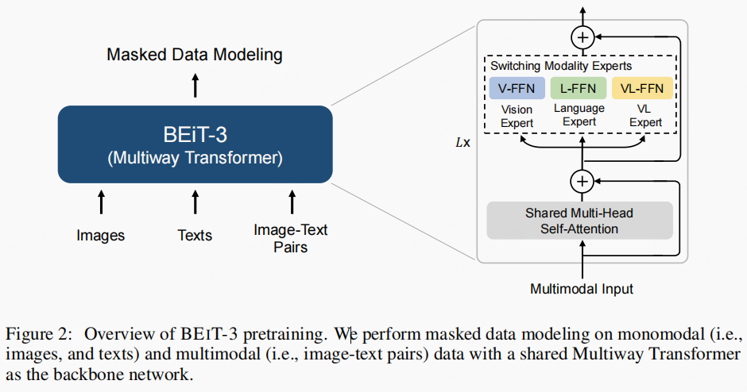
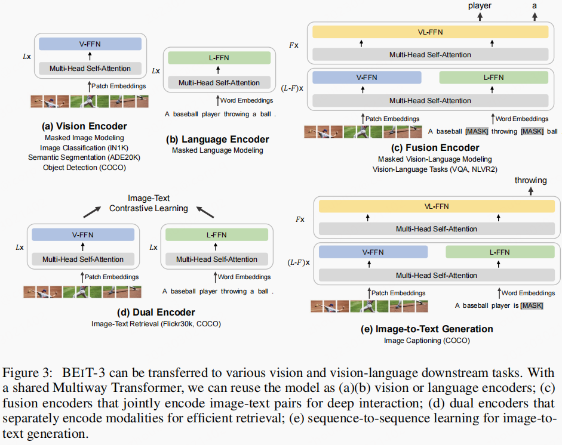
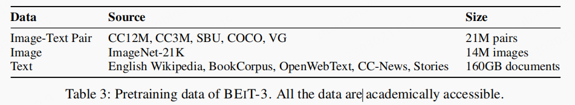
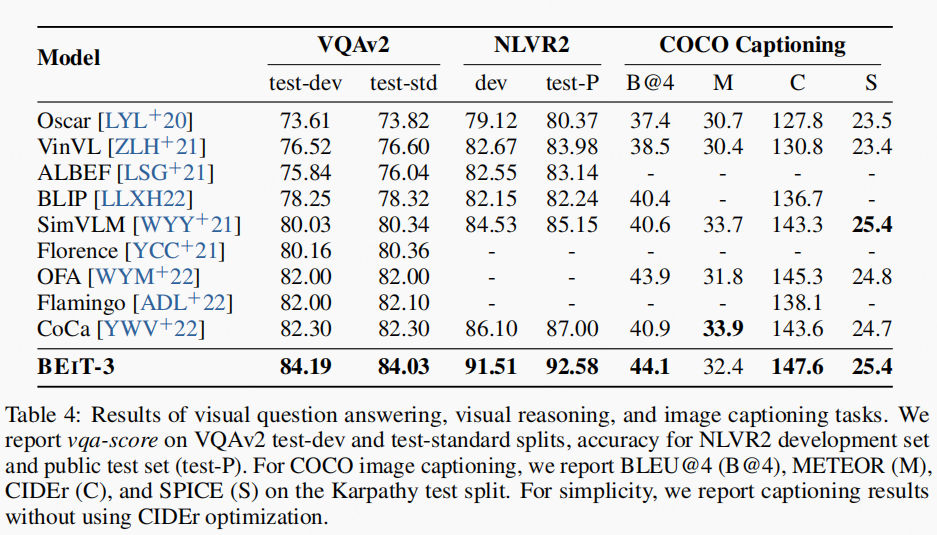
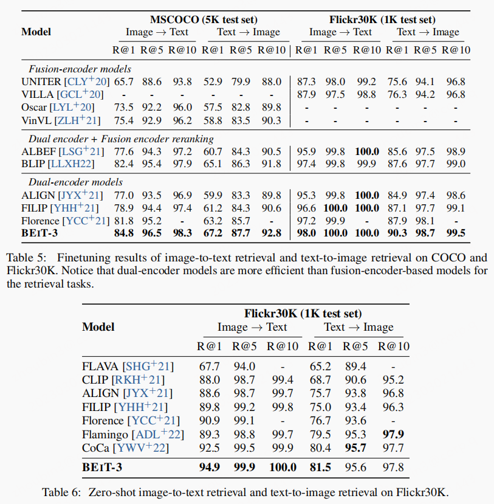
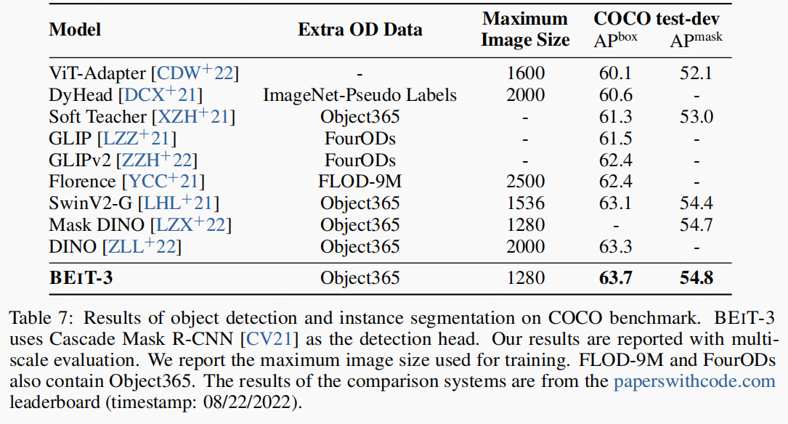
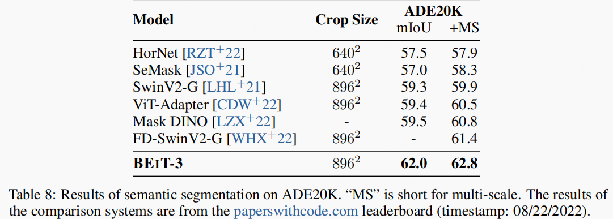
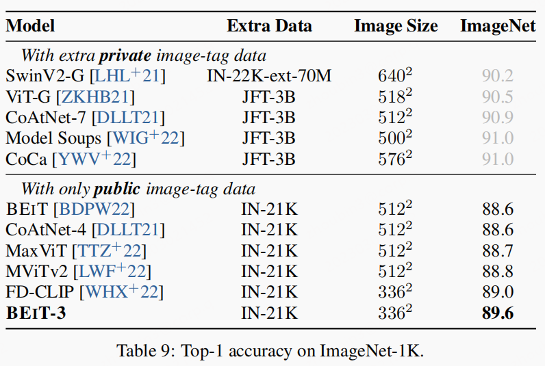

个人以为：该模型确实具备了大一统的Level，模型的设计方面：简单、优美、有效。
文章idea
- 将
image也看做是一种语言:foreign language。 - 没有使用多任务损失，因为作者认为这对模型是一种阻碍。因此仅仅使用一个损失。
文章主旨
- 号称多模态进入了大一统的时代，提出了
BEiT-3模型。 - 与其他多模态模型不同，该模型只使用了
MASK损失：MASK language model: MLM、mask image model: MIM。
模型细节

- 模型并没有直接使用
transfomer，而是使用了一种改进版本Multiway Transformer，该结构是对transformer的升级，具体细节此处不做赘述，请见另一篇博客：VLMo - 数据处理：文本的
token处理使用的是SentencePiece，并且会随机MASK掉15%的token。 - 图像的
token化使用的是patch，target并不是被MASK掉的patch，而是另外一种token化的方式，此处与BEIT v2相同。MASK策略：40% of image patches using a lock-wise masking strategy as in BEIT。 模态数据：
50% tokens of texts from image-text pairs+40% of image patchesBEiT v3是非常大的模型,与VLMo所有层均使用了相同结构不同，其稍微做了调整：All layers contain both vision experts and language experts. Vision-language experts are also employed in the top three Multiway Transformer layers实现细节：
Each batch contains 6144 samples in total, including 2048 images, 2048 texts and 2048 image-text pairs与其他多模态模型动辄多个
loss的实现不同，该模型只有一个基于MASK loss。
模型的使用方式

BEIT-3有多种使用方式，既可以当dual encoder，也可以用作fusion encoder；既可以只用以完成文本相关任务，可以只用以完成图像相关任务。下图是V+L相关的几种任务，其中a,b,c,d均是常见任务不做赘述。- 但是
e属于生成任务，原则上来讲普通的attention不能实现。但是这部分的细节在Image Captioning一节中有相关描述，可以理解成使用了mask self attention的思路，使得文本token只能看到其左边的token，不能看到右边没有生成的数据。这样就可以实现生成任务了，文中具体表述：BEIT-3 is used as a conditional generation model via masked finetuning. To be more specific, a special self-attention mask is employed for the image captioning task. Image tokens (i.e., image patches) can only attend to each other bidirectionally within the image sequence. Tokens of the caption can attention to image tokens, their leftward caption tokens, and themselves.
模型试验
数据集：

Vision-Language Downstream Tasks

VQA
对BEIT-3 进行调整以实现VQA任务，具体细节：BEIT-3 is finetuned as a fusion encoder to model deep interactions of images and questions for the VQA task. We concatenate the embeddings of a given question and an image, and then feed the input embeddings into Multiway Transformers to jointly encode the image-question pair. The final pooled output is fed into a classifier layer to predict the answer
Visual Reasoning
对BEIT-3 进行调整以实现NLVR2任务，具体细节：we construct two image-text pairs based on the triplet input. We finetune BEIT-3 as a fusion encoder to jointly encode the image-text pairs. The final pooled outputs of the two pairs are concatenated and then fed into a classifier layer to predict the label
Image Captioning
使用了mask机制，使得该模型可以实现生成任务。
Image-Text Retrieval
使用dual encoder的思路，文中描述是：Dual-encoder models separately encode images and texts to obtain their representations. Then we calculate the cosine similarity scores of these representations

Vision Downstream Tasks
Object Detection and Instance Segmentation
利用ViTDet的框架，将BEIT-3 作为backbone，Soft-NMS。 数据集：COCO

Semantic Segmentation
Semantic segmentation aims to predict the label for each pixel of the given image
利用Mask2Former的框架，数据集：ADE20K

Image Classification
数据集：ImageNet-1K。但是实现方式不是传统意义上的多分类任务，而是检索任务来实现：image-to-text retrieval. 将类别名当做文本，构建了image-text pairs。利用dual encoder完成构建模型，然后分别提取embedding，利用cosine similarity scores 预测最相关的标签。
